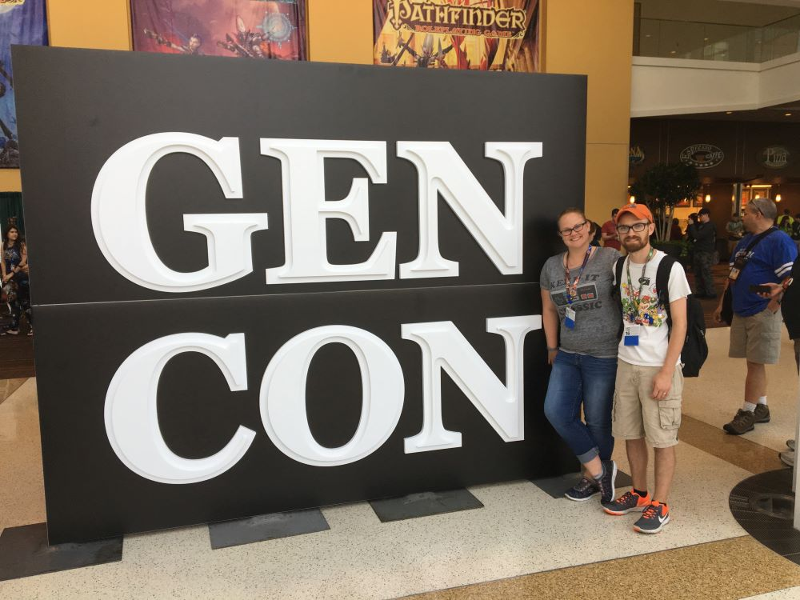

I collect board games and currently have over 150 games. My wife and I attend Gen Con (a large board game convention in Indianapolis) every year so we can see and demo new games.
I also enjoy hosting games nights for a small group of close friends. Most of our favorite games are cooperative, where the players are all working together to solve the puzzle or scenario presented by the game.